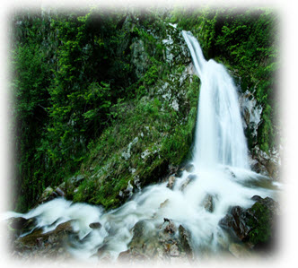
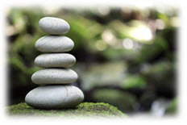
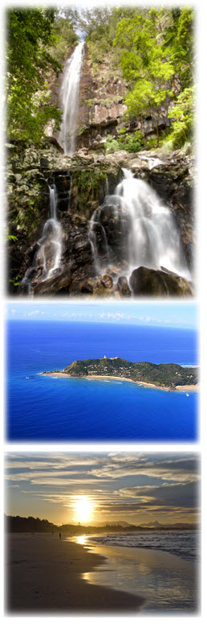

Have you been seeking answers on how to remain spiritually connected, yet still live an abundant life?
“Now You Can Stop Searching And Start Living The Life Of Purpose, Power And Prosperity You Were Meant To Live”
Discover how to finally get crystal clear on who you really are and your purpose in life, so you can easily manifest your dreams and desires…once and for all!
The key to your future lies in the modern day application of this rediscovered ancient wisdom from magical Hawaii…

From The Desk Of: Roberta Faddoul
Managing Director of Quantum Change Seminars, Co-developer of the revolutionary "Quit Cigarettes In 60 Minutes"™ Program, NLP Master Practitioner, NLP Trainer and Master Hypnotist
If you’d like to finally have the self-confidence and self-esteem to choose your purpose in life…
…and leave behind the doubts and fears that may have held you back from reaching your goals and dreams….
…and don’t yet have satisfying answers…
…then I have some GOOD NEWS!
You’re about to discover a profound and very ancient system for living…
…that few people know about…
…and yet is ideal for anyone who wants both spiritual fulfilment and material abundance.
With this blueprint for successful living, your life will be transformed.
EVERYTHING will flow more easily for you…
…and you’ll finally enjoy the fulfilling life you were meant to have.
Why CERTAINTY Is The Key To Your Future Happiness And Success
You see, when you have a sense of CERTAINTY about who you really are and your purpose in life…
…making decisions and taking action is EASY. There’s no doubt or hesitation about the right path for you.
Imagine how much more you can achieve when you’re not held back by any doubt or hesitation and you pursue your goals at 110% because you know that’s exactly what you’re meant to be doing.
And there’s another BIG BENEFIT to what I’m about to reveal…
…you’ll have all the ENERGY and vitality you’ll need to live life to the FULL.
But I’m getting a little ahead of myself here…
First let me explain more about why you might be struggling with those questions at the start of this message…
…and why, even if you have enjoyed great success already, you still feel as if there is something missing in your life.
You see, there’s what I call…
The Prosperity Paradox Of The Modern World
In the Western World, we live in a time
of prosperity and opportunity almost unknown in history.
Sure, there are problems and challenges to be faced…
…and right now there is certainly a fair amount of financial and economic turmoil around.
But if you step back for a moment, you’ll realise that we enjoy a material standard of living that even the “rich and powerful” of the past would have ENVIED.
And yet, many people are not satisfied with their lives…
…there’s an emptiness, a VOID inside…
…and too many of us seem to endure lives of “quiet desperation”.
The reason, I believe, is that with all the fantastic progress that we’ve made…
…we’ve left something behind.
We’ve forgotten some of the profound wisdom that helped us to achieve material success and prosperity in the first place.
We’ve forgotten…
The Natural Secrets Of Success, Happiness And Empowerment
Until very recently in human history, we all lived our lives with a close connection to the natural world.
After all, regardless of our progress and sophistication, we are a PART of that natural world.
And with that connection came two things.
Firstly, a better understanding and connection with our higher selves that meant a greater sense of certainty about who we are and our purpose in this life.
Secondly, the ability to benefit from the energy and power of the natural world.
If that second point seems perhaps a little “out there”, think just for a moment about the incredible energy in say a hurricane or even the regular ebb and flow of the tides.
Now, the extraordinary material progress of the last few centuries has come at a price…
…because we’ve largely lost that connection with the natural world.
As a result, many of us feel adrift, we’ve lost our spiritual grounding and understanding.
That’s why so many of us struggle with those questions like…
…Who am I? What is my life’s purpose? Why am I here?
Fortunately, not everybody forgot the ancient wisdoms.
Introducing HUNA…Ancient Hawaiian Wisdoms
For Practical Living TODAY
HUNA is a science of healing, enlightenment and personal empowerment. It’s the practical system of living that evolved in ancient times in the magical islands of Hawaii.
Its origins go back thousands of years. It’s not a religion, but an integrated system of energy work, psychology and spirituality. It’s not meant to replace any religion or beliefs but to enhance them.
Huna shows you how to get in touch with your life-force energy (called “mana”), how to use your energy more effectively and how to understand your connection with the world around you (including with other people).
And there’s something else…
Pretty much every single person who attends a Huna training experiences a profound transformation.
They describe a sense of INNER PEACE, a CERTAINTY about their true identity and their PURPOSE in life.
In Huna, this blissful state is known as being “Pono”…
…where you feel that you are right with yourself and the world…
…and all is correctly aligned and as it was meant to be.
It’s something you can now look forward to…
Introducing The Huna Intensive
Training
Huna is a PRACTICAL system for living…
…and it’s an EXPERIENCE not a theory.
That’s why the best way to learn Huna is at a LIVE TRAINING…
…just like the one that will be taking place
23-28 April 2012…
…in wonderful BYRON BAY.
That’s right, for the FIRST TIME EVER you’ll be able to discover for yourself the power and wisdom of Huna right here in Australia.
(Before this you needed to travel all the way to Hawaii itself…a wonderful trip but somewhat costly.)
Over the course of 6 days not only will you learn about Huna…
…you’ll EXPERIENCE the power for yourself at the very deepest levels of your being.
You will…
Understand and connect with your Higher Self in an easy but very powerful way
- Tap into universal sources of energy with a powerful way of adding energy to your daily life
- Accelerate your spiritual growth and understanding so that you are more centred and have greater peace of mind
- Expand your mental powers with access to resources that you didn’t know existed
- Discover the enormous power from simply controlling your breathing. Use these secrets to increase your energy or simply to relax at will
- Improve and strengthen all areas of your life with Haipule, the Hawaiian Manifestation process
…and MUCH More (such as finally being crystal clear on WHO you really are and your life’s purpose).
Allow me to walk you through the 6 days of this amazing adventure in more detail…
HUNA
HUNA is the ancient and traditional system of personal empowerment, healing and enlightenment from the magical islands of Hawaii. With the power of HUNA at your command, you can reconnect with the natural world, revitalise your life...
Day 1: Clearing Away And Healing The Past
To Prepare The Way For Your Bright New Future
…YOUR NEW START IN LIFE
 Pretty much all of us carry with us some “personal baggage” from the past that is holding us back in some way.
Pretty much all of us carry with us some “personal baggage” from the past that is holding us back in some way.
Regrets about the things we did…or did not do… and the guilt that can go with that…
…anger about past events and the actions of others…
…the lingering consequences of poor, limiting decisions that we made.
We all have to deal in some way with the consequences of these primary limiting emotions…
…anger, sadness, fear, guilt, anxiety and limiting decisions.
But the GOOD NEWS is that there is no longer any need to allow these issues to hold you back.
On the very first day of the HUNA adventure you’ll experience a powerful technique based on ancient Hawaiian practices that will help you ease any pain…
…physical, emotional or mental…
…so you can let go of the past experiences that might be holding you back.
It’s called the “Dynamind” technique and you’ll be astonished at how effective it can be.
Before that, you’ll be introduced to the foundations and core principles of HUNA…
…so you can fully understand this ancient wisdom and apply it in your life.
Here’s just some of what you’ll discover…
- The ancient origins of HUNA and why for many years these teachings were little-known to the world at large
- The links between HUNA and Shamanism and how to integrate this powerful knowledge into your daily life
- The Science of HUNA and how this translates into a practical (and powerful) system for your daily life
- “Aloha!” You’re probably familiar with this word …but you’ll discover that “Aloha” is MUCH more than just a greeting and is actually at the very heart of HUNA
- The emotional burdens that we all carry around (even though you may not be aware of them) and how to quickly free yourself
- WARNING! By doing this you cause not just emotional problems but also potentially serious physical problems as well
- How to quickly make changes in your life and achieve the happiness and fulfilment you desire
- The foolproof way to dissolve negative emotions and break free of self-imposed limitations
…PLUS a full explanation, demonstrations and experience of the “Dynamind” technique, the safe, easy and fast method of healing.
And that’s just the first day of our journey together…
Day 2: Supercharge Your Life With More Energy
Than You’ve Ever Enjoyed Before
Now that you’ve let go of the burdens holding you back…
…it’s time to reconnect with the incredible power and energy that’s available to you in the universe.
When you think about it, there is a virtually limitless amount of energy in the universe.
On this second day, you’ll discover how to reconnect to the world around you and tap into this UNLIMITED POWER OF THE UNIVERSE.
This skill of tapping into the elemental power was well known to the ancient HUNA masters…
…and now you can take advantage TOO.
Discover…
- The “Four Selves” possess and how they are connected
- The dangers that arise when too much emphasis is placed on one of the bodies at the expense of the others (and why in the Western World you may suffer from these particular problems)
- The HUNA approach to balance in your life. This may be VERY different to what you might expect
- How to connect with each of your Four Selves and discover how they can work together to deliver you a richer, more rewarding life
- The essence of health and healing and how to use that knowledge to virtually banish mental and physical disease from your life
- A different kind of wisdom and intelligence that can transform your life (and build on what you already know)
- The little-known connection between Quantum Physics and HUNA
- The real secret to understanding and working with your emotions so that you have greater joy and less anguish in your life
- There are 7 5 elements that are the fundamental building blocks of everything in the universe. Here’s what you need to know about them
- How to have more control over your personal energy levels and your physical world
- The real secret behind chanting and how to harness the true power of words to achieve what you want
- How to understand the hidden patterns that are impacting your life right NOW so you can make changes and create a better future
- The amazingly simple foundation for tapping into and boosting your energy that you can apply anytime, anywhere
On this second day you’ll also experience a traditional Hawaiian ceremony that’s an integral part of creating all the energy you need to have the life you want.
Next…
Day 3: Overcoming Challenges,
Helping Others…And Discovering Your Dream World
On this third day of our journey, we turn to applying your new knowledge, skill and power in the area of helping others (and yourself) to heal themselves.
You’ll also enter the amazing world of your dreams…
- The source of your energy, how to tap into it more effectively and put it to work in your life
- Practical ways to experience, understand and boost the energy of the different elements (these can easily fit in to your daily routine)
- What to do if you have too little (or too much) energy. The answers may not be what seems obvious
- What you MUST do first when you want to help somebody else experience a higher level of energy
- The remarkable power of prayer…but not as you might know it!
- The simplest way to get started immediately to boost your energy levels
- Why everybody sees the world in a unique way…and how you can change your experience to get more of what you want
- When you can control this…you can control (and change) reality
- Why the Law Of Attraction seems to fail for many people…and how to make sure it does work for you
- The most important question to ask when you wish to change your experience or circumstances
- A simple rule that will prevent conflicts and give you greater certainty and peace of mind
- The secret to gaining MAXIMUM power in your life…and what to do to get more of the results you want
- Warning! Words and thoughts have power and the consequences will show up in your life
- Why affirmations sometimes work and sometimes do not (and how to make sure they work for you)
- The secrets to Huna healing and what must, and must not, be present for success
- Hawaiian insights into the Mind-Body connection that you won’t find in conventional medicine
- Why chanting can actually have an impact on your physical body and improve your well-being
- The explanation for actions that might otherwise seem completely crazy
- The 7 principles that will guide you to live your life successfully and achieve the true happiness and fulfilment you desire
- How to connect with the most potent energy source available to you and the role played by dance, hula and chanting
- What to do when your life gets off-track and you seem to have “lost” skills, power and drive
Also on this day, you’ll be introduced to an amazing world…the inner world of your dreams.
Dreams are a channel of communication between your different selves or minds.
You’ll discover…
- Recurring dreams and their significance
- NIGHTMARES, the dark secrets they reveal and how to banish them
- What your dreams are telling you about your RELATIONSHIPS
- Insights into work and career. Your dreams can reveal if you’re on the right path…or heading for disaster
- Family issues and conflicts can become clearer with new perspectives from your dreams
- How your dreams can help in solving problems that may have baffled you. Many famous figures have drawn on their dreams to make astonishing breakthroughs…you can too!
The Dream World is a fascinating place and when you understand the landscape, you’ll find that every aspect of your life will be enriched.
Moving on to…
Day 4: How To Resolve Inner Conflicts
So That Your Life Runs Smoothly
On Day 4 of our journey together you’ll get to enjoy TWO MORE major breakthroughs.
By this stage, you’ll have a much better understanding of your true self and be well on the way to achieving the balance and centeredness that is the state of being “Pono”.
But there may still remain some unresolved conflicts in your life that are holding you back.
You have in your life a relationship with the things that are EXTERNAL to you…
…for example money and other people…
…and a part of that experience you carry inside of yourself.
If you’re NOT getting everything you want from those relationships…
…that’s the sign of an unresolved conflict.
Huna provides an uplifting and energizing way to resolve those conflicts…
…so that you can move forward in your life.
But that’s not all on this day…
Building on what you discovered previously about the DREAM WORLD…
…today you’ll get to experience a very special Huna DREAM TIME.
Think of this as your very own personal guided tour of the dream world…
…where you’ll get a map you can use over and over to explore this fascinating inner world.
Coming up next, something VERY SPECIAL…
Day 5: A Journey Of Mystery And Wonder As You Connect With The Natural Energy And Power Of Australia
Mastering Huna is more about EXPERIENCING
the knowledge rather than simply learning techniques.
And much of the power of Huna comes from understanding the world around us…
…and tapping into the virtually UNLIMITED energy of nature.
Now, you can access this energy and power anywhere…
…BUT there are certain special places and locations where it’s much easier to connect.
For example, the majestic volcanoes of Hawaii and the surrounding areas.
Now, there are no active volcanoes in Australia to visit…
…but there ARE special locations where the power of the natural world is particularly strong.
We have identified several such places in and near Byron Bay…
…another reason why we decided to hold the Huna experience there…
…and we’ll be undertaking a field trip on this fifth day.
At one of these secret locations, you’ll experience for yourself how to connect with the different natural energies…
…and use that power to enhance your life.
You’ll also discover how to identify these natural “Power Points” so that when you return home you can continue to benefit from this amazing source of energy.
And the great thing about being able to do this here in Australia is that you get to work with and understand the power of this great land directly.
As you would expect, the energy sources differ around the world.
If you were to learn Huna in Hawaii, the experience would be different…
…and you’d have to adjust to the different Australian energy when you returned home.
But there will be no need for you to have to do that…
…you’ll already have a local connection.
There’s no set agenda for this field trip…
…we’ll be guided by the energies that we discover and work with.
If it’s anything like other Huna experiences…
…I can promise you a day of mystery, enchantment and wonder…
…a day unlike any other that you’ve spent.
On our return we come to…
Day 6: Aloha! Next Steps…
…And The Beginning Of Your New Life
You might know the word “Aloha” as a greeting…
…but it’s also used in many other ways…
…including when you part company with someone.
In the Hawaiian language there isn’t really a word for “Goodbye”…
…it’s more like “Until We Meet Again”.
So day 6 is not really the end of the journey…
…but just the beginning of the next stage.
On this day, you’ll be introduced to some new ways to use some of the techniques you’ve already discovered…
…PLUS we’ll review everything covered so far, discuss the lineage of Huna (the origins and history of this amazing science) and reveal where you can go from here.
Here’s what’s included…
- More ways to get more energy into your life…and those of the people you care about
- Discover a traditional casting system used in Huna and how this can help you (and others) solve problems, dissolve stress and enjoy better health and vitality
- The incredible history of Huna…how (and why) the teachings were little-known for many years and the Masters who kept alive this profound knowledge and wisdom for the benefit of today’s generations
- How to include the power of RITUAL in your life to bring about the changes you want faster and with ease
At the completion of these 6 days, you'll possess profound skills and knowledge that few other people even know about.
And let there be no doubt, you WILL have the power of Huna at your command...
…ready to help you make profound changes in your life.
That’s because as your guide you’ll have…
Dr Serge Kahili King – One Of The World’s Leading Huna Teachers And Experts
 Author, speaker, trainer, scholar, humanitarian, shaman and adventurer, Dr Serge Kahili King is truly one of the world’s leading practitioners of Huna.
Author, speaker, trainer, scholar, humanitarian, shaman and adventurer, Dr Serge Kahili King is truly one of the world’s leading practitioners of Huna.
He has published the world’s largest selection of books and digital media on Huna and on the spirit of Aloha, the attitude of love and peace for which the Hawaiian Islands are so famous. He also writes extensively on Hawaiian culture.
His books include Urban Shaman, Huna: Ancient Hawaiian Secrets For Modern Living and Instant Healing.
Serge began his Huna studies at the age of fourteen when he was initiated into the path of Hawaiian shamanism by his father. At eighteen he was adopted as the grandson of Joseph Kahili of Kauai, a “kupua” or shaman of the Hawaiian tradition. Many years of training in the practice and traditions of Huna followed.
No recluse, Serge has travelled widely and spent seven years in West Africa directing community development and disaster relief programs. During that time, he also trained in African shamanic traditions.
In his search for knowledge, Serge has made in-depth studies of other shamanic traditions around the world (including Mongolia) as well as gaining an impressive array of more formal academic credentials.
He holds a Ph.D. in psychology from California Coast University, a Master's degree in International Management from the American Graduate School of International Management (Thunderbird) in Arizona, and a Bachelor's degree in Asian Studies from the University of Colorado.
In addition to speaking and teaching in many countries, Dr. King is the founder and Executive Director of Aloha International. This world-wide network of teachers, counsellors, therapists and empowered individuals is dedicated to the purpose of sharing his teachings with all those who desire a better life.
On his home island of Hawaii Serge gives workshops and trainings throughout the year, and holds teaching sessions every month that air regularly on cable television in the islands and on the US mainland.
As you can see, there really is nobody else with Serge’s unique background and skills…and nobody better to help you put the magic and power of Huna into your life.
And, another big PLUS is that…
The Huna Intensive Training
Will Be Held In Wonderful Byron Bay…
We've chosen a truly outstanding location for this event.
It's wonderful Byron Bay on the north coast of New South Wales.
Rightly known for magnificent beaches, beautiful scenery and a magical atmosphere, Byron Bay is located in one of Australia’s loveliest areas of natural beauty.
It’s close to Mount Warning and Mount Warning National Park, places that are perfect for you to connect with the natural energy of the Australian continent.
You see, Mount Warning is the central volcanic remnant of an ancient shield volcano (the Tweed Volcano). Today, the vast areas that were part of the volcano include many mountains and ranges such as the Border Ranges, Tamborine Mountain and the Lamington Plateau.
Due to Mount Warning's proximity to Cape Byron, the Australian continent's easternmost point, it is the first place on mainland Australia to receive the sun's rays each day…
…adding to the magic of the location.
As soon as you arrive, you’ll realise why we selected Byron Bay for the Huna Intensive Training.
It’s an ideal place to relax, leave the cares of the modern world behind and truly connect with your true and authentic self in a natural setting.
And when you complete the Huna Intensive Training, you’ll be renewed and re-energised in a way that you’ve never experienced before…
…as well as having a clarity, focus and certainty about your life going forward.
BUT, please don’t simply accept my word for it…
Praise For Dr. Serge Kahili King
And His Huna Training
I mentioned before that Serge King has authored and published the world’s largest selection of books and audios about Huna.
Not surprisingly, he is widely recognised as one of the leading modern-day authorities and practitioners of the Huna way.
Here’s what some other leading authors and experts in personal success have to say about Serge and his work…
“Dr King’s traditional Hawaiian approach to healing and his blessing rituals are especially respectful and worthy of our full attention.”
- Louise Hay author of “You Can Heal Your Life”

“This beautiful, useful book reveals profound teachings about our relationship with the natural world and the universe. I was inspired by these wisdom-principles that can illuminate our path through life.” - Dan Millman, author of “Way Of The Peaceful Warrior”
“This …is the blueprint that unlocks the secrets to everything your want in life.”
- Mary Olsen Kelly, author of Path Of The Pearl and Chicken Soup For The Breast Cancer Survivor’s Soul
“Outstanding! Think you whole new world into being as you follow Serge’s simple yet powerful ways to apply the ancient, deep and hidden wisdom of Huna, offering you the gift to make change happen now.”
- Yvonne Oswald, PhD, award winner in the field of hypnotherapy and author of Every Word Has Power
“Huna is a wealth of knowledge and systems to improve and celebrate one’s life. Framed in the wisdom and meaning of selected authenticated and personally interpreted Hawaiian words and proverbs, Serge Kahili King stands out as a beacon and voice of the contemporary school and movement called Huna.”
- Patrick Ka’ano’I author of Kamalamamalama
Impressive, I think you’ll agree.
Now you may be wondering about the investment to attend this UNIQUE and extraordinary training.
Well, here are the details of…
The Surprisingly Small Investment To
Transform Your World At The
Huna Intensive Training
What’s it worth to you to finally have the self-confidence and self-esteem to choose your purpose in life?
To finally have a sense of certainty…and the peace of mind that comes with that…about your true identity and your purpose…your DESTINY…in this life?
When you think about it, that’s a priceless gift…
…because with that you’ll be unstoppable in life.
And that’s even without the new vitality and energy you’ll have…
…when you put the natural power of Huna into your daily life.
Taking all that into account…
…especially as this is a LIVE 6 Day training…
…you might expect that the investment would be easily worth $15,000 or even $20,000.
At QCSeminars we decided that we wanted to make this as affordable for you as we could.
You see, we both believe that right now it’s very important for the wisdom and power of Huna to be available to as many people as possible to make a positive difference in the world.
The regular, and very fair, investment is $8,995.
But we’ve decided to reduce that even further so that…
…your investment for the complete 6 days is just $2,995…
…and you can even take advantage of our special payment program (see the Priority Registration Form for details).
I think you’ll agree that’s more than fair.
And so that there are absolutely no reasons left for not taking advantage of this incredible opportunity…
You Are Protected By My 100% Risk Free, Peace Of Mind Guarantee
Before the completion of the first day you MUST be thrilled and delighted with your decision to attend the Huna Intensive Training or I insist that you get your money back IN FULL.
So join us at the training for the complete first day and…
Discover the secrets of this extraordinary integrated system of energy work, psychology, spirituality and empowerment that can transform your life
Enjoy the boost to your energy that you’ll get just from being at this unique event in such a wonderful location
Experience for yourself the powerful “Dynamind” technique based on ancient Hawaiian practices that will help you ease any pain…and release some of the burdens that may have weighed on you for years.
 In the unlikely event that you are not convinced that the Huna Intensive Training is outstanding value and that attending is a not-to-be-missed opportunity for you…
In the unlikely event that you are not convinced that the Huna Intensive Training is outstanding value and that attending is a not-to-be-missed opportunity for you…
…then simply speak to me or one of my team at the event before the end of the first day. Let us know that this wasn’t the right decision for you and you’ll receive a courteous refund ON THE SPOT.
You even get to keep any bonuses and course materials you received on the first day as a “Thank You” for taking a look at the training.
I think you’ll agree that’s a very fair arrangement.
HUNA
HUNA is the ancient and traditional system of personal empowerment, healing and enlightenment from the magical islands of Hawaii. With the power of HUNA at your command, you can reconnect with the natural world, revitalise your life...
Now…
Let's Recap Why You'll Want To Be At
The Huna Intensive Training…
Here Are 12 Compelling Reasons To Avoid Missing Out…
REASON #1: Before now to discover all the Huna secrets revealed in this course, you had to travel all the way to Hawaii. You get to enjoy this special training right here in Australia
REASON #2: Because Huna is all about the experience, not just learning the theory. The only way to really understand the power of Huna is to FEEL it flowing through you. The only way to do that is at this LIVE training
REASON #3: Because this is a live EXPERIENTIAL training, you'll have the opportunity to get ALL your questions answered. At the end of the program there will be no doubts, no grey areas and absolutely nothing that is not 100% crystal clear
REASON #4: You'll enjoy a new level of ENERGY and VITALITY in your life as you connect with the natural world and tap into a virtually limitless source of energy
REASON #5: You're going to be meeting a very special group of people, individuals who are not prepared to settle for second best, who want to enjoy life to the fullest and who are prepared to embark on this unique adventure
REASON #6: This is going to be a BLAST! Sure, you’re going to discover knowledge and ancient wisdom that few people will ever get to know about. But that doesn’t mean it’s going to be serious and uptight. And at the same time connect to a love of life and happiness. You’re going to have a GREAT time!
REASON #7: Your investment is protected with my special 100% SATISFACTION GUARANTEE
REASON #8: You can network with a very special group of people. Only a handful of Australians have ever discovered the secrets of Huna before now. You’re going to be part of the very first group to learn this amazing system for successful living right here in Australia. Something special happens when like minded people get together, ideas are shared, breakthroughs happen. It's almost magical how it happens but there's a connection between everyone. The new friendships you make will last for years to come.
REASON #9: The investment to attend the Huna Intensive Training is a remarkably low $2,995 for the entire 6 DAY LIVE TRAINING. It may never be this affordable again
REASON #10: This is your chance to be part of a great ADVENTURE to bring the power of Huna more widely into the world (especially Australia, of course). Rarely has the world needed this energy more and you can help to make it a better place for everyone
REASON #11: You get to treat yourself to a well deserved stay in wonderful Byron Bay.
REASON #12: You have Dr Serge Kahili King as your guide and mentor, one of the most inspiring and effective Huna practitioners and trainers on the planet today
That's 12 BIG REASONS to make sure you grab your place at the Huna Intensive Training.
And here’s ONE MORE…
…PLACES ARE STRICTLY LIMITED!
Because of the practical and “hands-on” nature of this training, the places available are limited.
There’s already been a huge amount of interest and 52 places were snapped up almost instantly when we previewed the Huna Intensive Training at one of our NLP events recently.
I’m pretty sure this will sell out…and FAST.
So…
Here’s How To Claim Your Place At The Huna Intensive Training
Here are the dates and location once again…
WHERE: Byron Community Centre
69 Jonson Street, Byron Bay
WHEN: April 23-28, 2012
It’s easy to make sure that you claim your place as one of the SELECT group at the Huna Intensive Training.
BY FAX: + 61 2 9518 4982
BY MAIL: GPO BOX 1617, Sydney, NSW 2001 ...Or...
2) Register by phone…CALL 1 300 733 642
I’d Hate It If You Were…“Hala”
– It’s Time To Choose
In the Hawaiian language the word “Hala” means…
…”to miss a path”.
Or to put it another way…
…when the world presents you with an opportunity that you know is right for you…
…you fail to take action.
Quite frankly, not everybody is ready to take advantage of all that Huna can offer.
But if you’ve got to this point, my sense is that deep down you know that the Huna Intensive Training is right for you.
Right now you have a unique opportunity to set out on a new and brighter path in life.
I’m confident you’ll make the choice that’s right for you.
Imagine waking up every morning and looking forward to the day with a sense of excitement and anticipation.
Imagine how much easier everything will be in your life when you know with a sense of CERTAINTY who you really are and what you are meant to be doing.
Decisions will come easily, choices will be clear and you’ll be free of nagging doubts. You can confidently step forward every day into the life of happiness and abundance that you’ve always dreamed of. The Huna Intensive Training is the key to that future for you.


With Love and Success,
Roberta Faddoul
P.S. When you attend the unique Huna Intensive Training, you get a full 6 day LIVE experiential training, including a 1 day field trip all for just $2,995.
P.P.S. Here's where to reserve your place…
BY FAX: + 61 2 9518 4982
BY MAIL: GPO BOX 1617, Sydney, NSW 2001
…OR…
2) Register by phone…CALL 1 300 733 642
So ENROL NOW and Make a Quantum Leap to Your Success!
“I see the application of Huna principles in everything I do…most of all I am having fun!”
You led us on a journey to the heart of nature. I rediscovered Magic. The Magic of seeing my world as a dream. The Magic of touching with my aka body. The Magic of knowing that everything is energy and that I have the power to influence, to create and to change.
I've stepped thru a portal and I breathed in Magic and exhaled laughter.
The learning did not stop when the workshop ended. I am constantly reminded to be aware and pay attention. I see the application of Huna principles in everything I do. But most of all I am having fun playing with the clouds, dancing with the wind and talking to the stones and trees.
- Lois Stokes
“…good company…for some twenty years!”
Dear Serge, Thank you for your work. Your books and tapes have been good company for me for some twenty years!
- EW
“I loved the class…Wonderful!”
Hi Serge: Thank you again for offering the Shaman Intensive. I loved the class, especially the breadth of knowledge that you brought, the tools that you shared with us and the depth of the class. Wonderful!
- AM
“Dynamind…is one of the most efficient techniques I have ever found”
Dear Serge! We were in loose contact in 2009 when I purchased your fantastic training-course "Dynamind Technique"…I have implemented Dynamind in my daily work with my MD wife and there is hardly any patient or client who leaves our sessions without at least three rounds of Dynamind. It is one of the most efficient techniques I have ever found and both my wife and myself would like to thank you for sharing this wonderful technique with us! Mahalo & ALOHA!!!!!
- EK
“Instant Healing…has been the most helpful and practical system”
I use Instant Healing for all my medical issues right now…it has been the most helpful and practical system. I used it years ago for insomnia successfully, and now for leg pain after knee surgery. Many thanks!!
- MJF
“…a new level of certainity of the influence I have in my own life…”
Deepest sincere thanks! The most recent Huna book has been of immense help to me recently while experiencing the fears coming up around my partner's health. I even left a short 5 star review a couple days ago on Amazon...the first time I've ever been moved to do that. I awoke this morning with a new level of certainty of the influence I have in my own life and its circumstances which surpasses anything experienced before. I am 66 years in this life, so I am profoundly grateful to Serge and all who are actively supporting this work and path.
- RAL
“…suddenly it seemed so easy…I am on the right way of being and living!”
ALOHA: I had the luck to enjoy you and your family in Vienna at the "Huna Therapy" seminar. It was a pleasure to me, all three days, including the self confidence part, to feel the real feelings of harmony, love, power and understanding. Not one time in my life before had I felt this experience! The whole time I had the feeling of knowing all this but I never was able to express this energy! And suddenly it seemed so easy. In those three days I learned to trust myself again... I thought I did it, because I had a lot of mountains in my life ( like everybody)...but the trust in myself was maybe not strong enoughh anymore...even when I checked everything alone!
Thanks so much for this experience!! It gave me a lot of trust, love and energy to say to myself: "I am on the right way of being and living!" Finally I found a philosophy, far away from my country, that matches the same way like I feel deep in my heart :)) !! Light, love and harmony for you and your shining woman, Gloria.
- CS, Austria
“I truly change my life around”
Hi Serge: I wanted to thank you very much for your wonderful books and advice! With some lines and a chapter out of "Huna: Ancient Hawaiian Secrets For Modern Living" I truly changed my life around…
…with the self-confidence and self-esteem exercises and some exercises in focus and blessing my job suddenly turned everything around: Suddenly I loved my job again very much and got back my old strength in it…
And now I earned in a shorter time than I even imagined almost out of nowhere! And I love earning money. Just by loving my job again and loving what I do and loving to earn money. And a bit of asking for what I am worth was also in there ;).
I am sooooo happy, happy, happy! So I am sharing the love and happiness with you. You are a wonderful teacher. I had experienced this state before, but I did not know how to get consciously into it. Now I know. Blessings to Success and the power of love! "A kind word can melt the hardest heart."
- FF (via Facebook
“…shocked how well (Dynamind) really worked”
Serge: I discovered this technique (Dynamind) two days ago at huna.org and after the very first time doing this (and every time doing this) I was shocked how well this really worked. I was feeling stress and fear, did this technique exactly as instructed and I felt kind of "stoned" and felt REALLY relaxed afterwords. Stress and fear went away. I wasn't even sitting straight when I did it and probably tapped my neck at the wrong spot, and it worked anyway!
- MD
“…a fabulous blueprint for living that literally liberated me from years of weary self struggle”
Thank you, Serge. I'm not sure if this method of thanking you is appropriate but I wanted to write how profoundly influenced I have been by your two books “Mastering the Hidden Self” and “Secrets for Modern Living”. My whole life had seemed such a struggle to delineate a mind/body/world awareness and your work laid out, in glorious detail, a fabulous blueprint for living that literally liberated me from years of weary self struggle. I simply cannot thank you enough.
- PY, Canada
“…haven’t felt this good in a LONG time”
Hi Serge…I felt really empowered and really good after the workshop today. Great stuff! I haven't felt this good in a LONG time. Thank you!
- AG